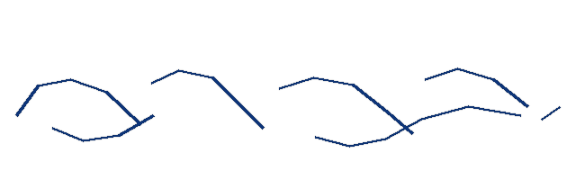
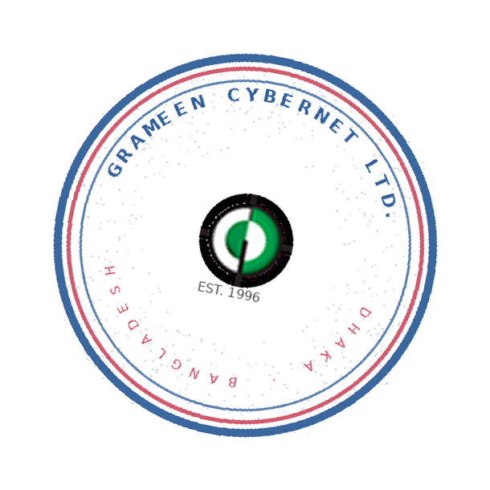

This is to certify that Mr. Md. Nojir Hossain, son of Mr. Abdul Hasim and Mrs. Begum Akter, was employed with Grameen CyberNet Ltd. (an ISO-certified nationwide Internet Service Provider and IT solutions company) for the period from 06 June 2015 to 01 January 2018.
During his tenure, he served in the capacity of Technical Support & Network Operations Officer in the Technical & Customer Care Division. He was responsible for assisting subscribers, monitoring network connectivity, coordinating field-level support, and maintaining service quality in accordance with company policy and BTRC guidelines.
We found him sincere, disciplined, and cooperative with colleagues and management. He discharged his duties with diligence and maintained a satisfactory standard of professional conduct throughout his employment. His character and conduct during the service period were good.
He left the organization on 01 January 2018 upon completion of his engagement with us. We wish him every success in his future career.
This certificate is issued at the request of the concerned employee for whatever legal purpose it may serve.

Ghulam Mohiuddin
Managing Director
Grameen CyberNet Ltd.

Official Seal